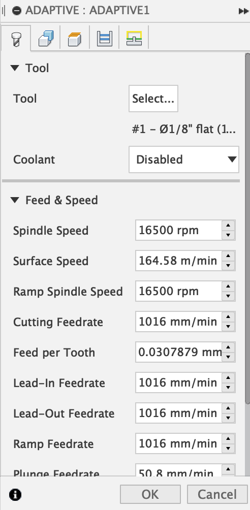
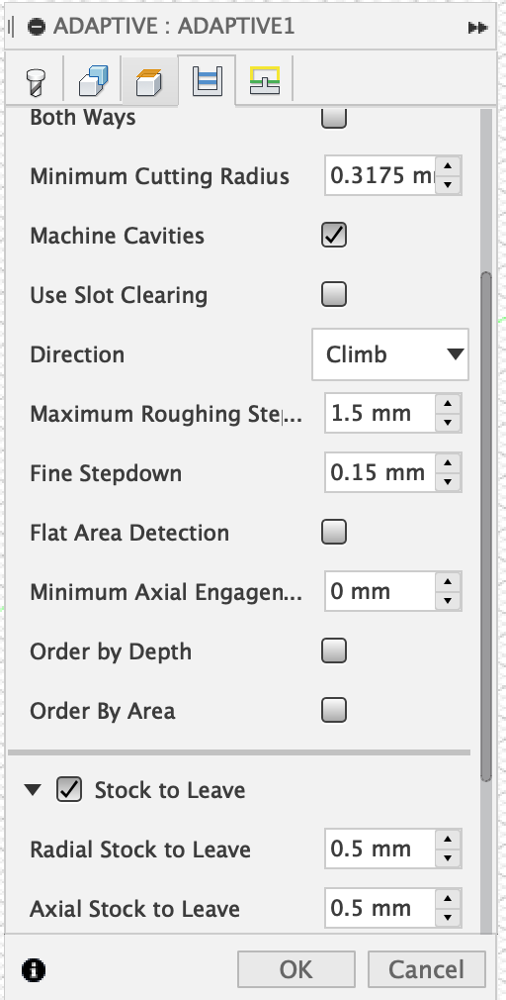
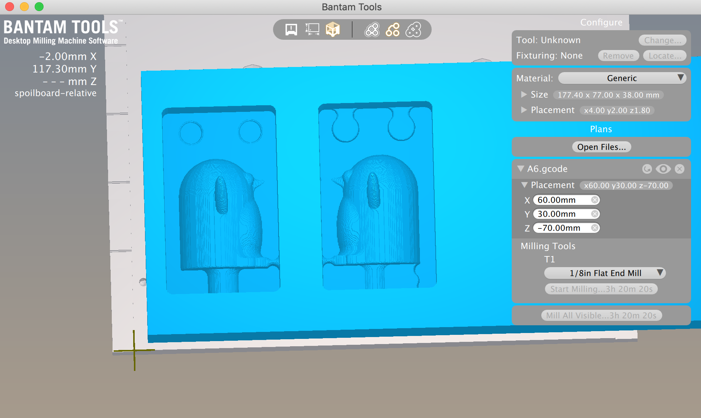
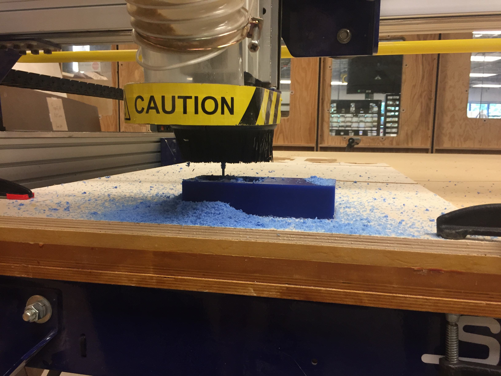

Design
Process
I wanted to make a fun mold, so I went on Thingiverse to find my master part. I found a cute penguin STL (cited in previous section and at the end of this page) and used that as my master part. This was the easiest part of the entire process of this assignment. Step 2: Designing the mold
To start the whole molding & casting process of the penguin, I had to design my meta mold. I used Rhino as my CAD software, so I can follow along with the in-class demo video. I used calipers to measure the machinable wax to determine the size of each part of my 2 part meta mold. The machinable wax was 3in x 7in x 1.5 in. Using these measurements, I decided the width, height & depth of my meta molds. I wanted to leave extra machinable wax just in case something went wrong. I used the rectangle tool, extrusion tool, and boolean difference to make 2 mold boxes. The overall box dimension was 77mm tall and 45 mm wide. The bigger box had a depth of 1.5 in and the smaller box had a depth of 1.25 in. Using boolean difference I subtracted the smaller box from the big box. I imported the penguin STL file. I then used scale to make the penguin into a size that would fit the mold. I used MeshSplit to divide the penguin in half down the middle for symmetrical parts.
Boolean difference to make the keys part "sink" into the box on left
When I finished my Rhino file, I exported it into STL. I then opened the STL on Fusion 360. I followed the class demo for the Fusion 360 set up for the toolpath. An issue I had with importing into Fusion 360 is that the scaling became way off. My molds ended up being much bigger than the original size. I had to scale it down. Using math (dividing the original size by the new large size), I scaled down the mold to the appropriate size. I then went into Manufacture mode and went into set up to set up my file for toolpathing with the mill. After set-up, I used adaptive cooling to choose the tool and stepdown size to create the toolpath. I used the simulation tool to see the toolpath. I then went into post process and generated the g code for OtherMill.
Fusion 360 set up settings  
Fusion 360 adaptive cooling settings
I wanted to check out the toolpath that Fusion 360 created on BanTam. The whole Fusion 360 set up was meant for the BanTam OtherMill milling machine. Using the video of the in class demo, I played around with the g code file to place the molds into a proper location, so that it could be milled. When I went into preview mode on BanTam, it showed that my molds wouldn't turn out the way I designed them. This was frustrating cause I had no idea how to fix it, so I knew I would have to go to office hours.
Generated toolpath from Fusion 360 
Preview on BanTam
I went to office hours that Nadya held in Fluke on Sunday to get help with my file and with milling my machinable wax. I wanted to know what was going on with my file that led to the preview shown on BanTam. The first time Nadya looked at my file she mentioned about the size of the tool and how much room there is for the tool to get through certain areas. With that information I made adjustments to where the keys were located in the molds and updated my STL. Another thing I learned was that because we were using the Shopbot to mill, the Fusion 360 g code file wasn't necessary here. The g code from Fusion 360 can be used when using the OtherMill (which I provide up above). All I needed was an STL file to give to Nadya. When I was ready with my updated STL file, Nadya took another look to make sure it was good to go with the Shopbot and the associated Shopbot program. One thing I didn't consider was the wing of the penguin and how it was propped up. Nadya pointed this out and reminded me that the mill wouldn't be able to get into certain parts to create the wing. If I had 3D printed, the wing wouldn't have been an issue. I had to re-adjust and come up with a new solution: slice the penguin differently. Instead of down the middle to have 2 symmetrical halves, I had to slice down the middle to separate the front and back of the penguin. I wanted to use the same mold I already created to save time and have my file ready for when it was my turn to go on the Shopbot. I re-imported the penguin file into Rhino and used scale to make the penguin the right size to fit in the mold boxes. Then I used MeshSplit to slice the penguin in the new way. I placed each half on its respective mold.
Updated mold on Rhino



Milling the machinable wax
I was happy with how my machinable wax meta mold came out. The only minor thing was that there was some excess wax on the sides of the mold. I went to the MILL to use the knives they have to clean up some of the excess wax in my mold.
Removed as much excess wax as possible
Now that I had the meta mold ready, it was time for the silicone mold creation, and to do that, I used Oomoo 30 smooth-on solicone mold making kit. Following the instructions, I mixed equal parts of Part A and Part B together. I made sure that it was fully mixed with no streaks of either color left. When the silicone mix was ready, I poured it into the mold and let it sit for 6 hours.
Silicone mix poured into mold
Now with the silicone mold ready, it was time to plaster! The easy part of this process was putting the 2 part mold together and putting masking tape around to firmly hold the mold. I used the plaster that Lukas had bought and shared with the class. I wasn't entirely sure how to use the plaster as the instuctions on the box involved weighing and using an electric mixer, and I don't have a scale or mixer. Fortunately, some classmates had already used the plaster and shared information on Slack. Shout out to Tien for sharing the ratio and method she used to mix. Using a spoon and a spare cup, I mixed 3 parts of plaster to 1 part water. I used a spoon for the 3:1 ratio. I mixed the plaster until the water and plaster mixed fully then poured the plaster into the mold.
Additional Credit: Lukas for providing the plaster that we were all able to use
Source Credit: I found a penguin STL on Thingiverse and used it for my master part. The penguin design can be found here.